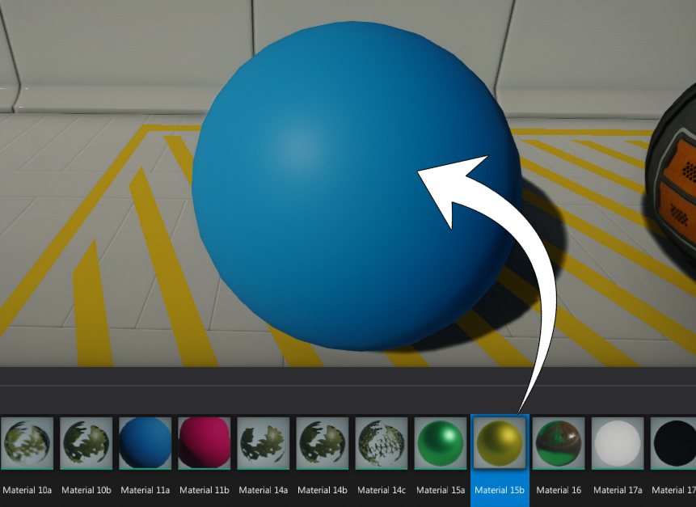
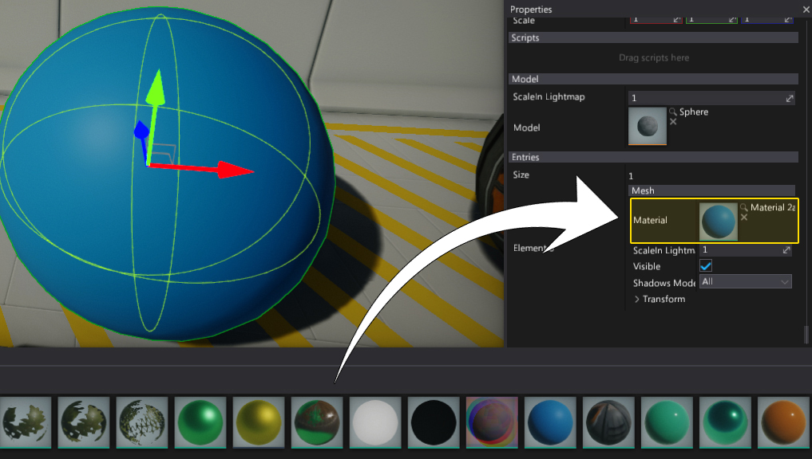

Materials Basics
Material defines the appearance of the model surfaces and how they react to light. Each material describes not only it's color but also how it reflects and emits light. All those properties are used by the Flax rendering pipeline to result in realistic lighting (Physically Based Rendering).
Creating new material
In the Content window navigate to the Content folder
Right click in the empty area
Select option New -> Material

Specify new material name and press Enter
Double click on a material

Material Editor window shows up
Material nodes
The first and the most important thing to know about the materials editing is that they are made of nodes. Each node generates a snippet of HLSL code so in that way connected nodes networks outputs full materials source code. This means that user creates a material using visual scripting instead of writing code.

The above picture shows a sample of mahogany floor surface properties. However it's important to say that the material node's network does not need to be so simple. In many cases, artists create complex materials to achieve the desired look.
To learn more about materials editor you can find documentation in the Material Editor section.
Using textures
The most common way to supply details to material surfaces is by using Textures. In the case of materials, textures are simply images that provide some sort of pixel-based data. This data may be the color of an object, how shiny it is, its transparency, and a variety of other aspects. There is an old-school mode of thought that texturing is how you apply color to your game models. While the process of creating textures is still critical, it is important to think of textures as a component of materials, and not as the end result themselves.
A single material may use several different textures for different purposes. For instance, s simple material may have a diffuse color texture, a roughness map and a normal map.
To use texture in a material, simply drag & drop it from the Content window into the material surface. It will automaticly create a proper texture sampling node. Alternativly you can create new Texture or Normal Map node.

To learn more about textures pipeline you can find documentation in the Textures section.
Applying material to model
There are several ways to apply material to the model:
- Drag & Drop material asset right onto the model

- Drag & Drop material asset into the properties window

- Assign material to the model material slot

- Set material using C# script
public class SetMaterial : Script
{
[Tooltip("Material to assign to the model")]
public Material Material;
public override void OnStart()
{
Actor.As<StaticModel>().SetMaterial(0, Material);
}
}